Los capacitores, también llamados condensadores, son componentes eléctricos pasivos que son capaces de almacenar cargas eléctricas y descargarlas en un circuito eléctrico. Están diseñados para almacenar una cierta tensión que será igual a la de la fuente que se halla conectado. Existen diversos tipos y tienen diversas funciones tanto en electricidad como electrónica.
| Tabla de contenidos |
|---|
|
Composición
Estos dispositivos están formados por dos placas o armaduras de un material conductor enfrentados y separados por un material dieléctrico, es decir, un medio aislante que se opone al paso de corriente.
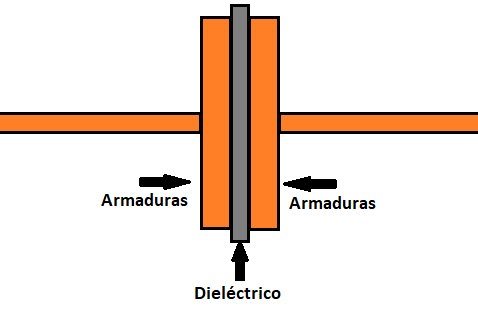El dieléctrico se dispone en una fina capa para que las placas o armaduras se encuentren lo más cerca posible.
En los diagramas electrónicos se representa con los siguientes símbolos:
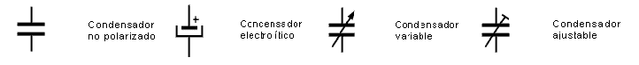
Funcionamiento
Al conectarse a una fuente de alimentación, los electrones del polo negativo de la fuente se mueven hacia la placa del condensador a la que está conectado, generando en esta cargas negativas, mientras que los electrones de la placa opuesta serán atraídos y se moverán hacia el polo positivo de la fuente, generando en esta otra cargas positivas.
Debido a la diferencia de potencial existente entre las placas del capacitor se genera una fuerza de atracción electromagnética que mantiene a las cargas en su lugar, incluso si se le desconecta del circuito.
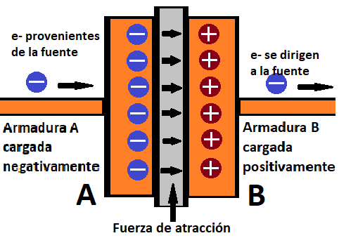1. Carga
El condensador se cargará hasta que entre sus placas exista la misma tensión que en la fuente. Esto debido a que a medida que este se carga, la diferencia de potencial con la fuente disminuye, provocando lo mismo con la corriente. Este proceso de carga puede apreciarse en el siguiente gráfico:
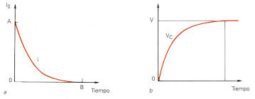El capacitor aumenta su tensión con el tiempo mientras que la corriente disminuye, hasta que la tensión de este sea igual al de la fuente.
Si se produce un desequilibrio de potencial, ya sea porque la tensión aplicada es mayor o menor a la cargada, se generará una nueva corriente a través de la cual se cargará si es mayor o descargará si es menor para que nuevamente se equilibre la diferencia de potencial
2. Descarga
Al conectar ambos terminales del dispositivo cargado, se genera un nuevo camino a través del cuál se mueven los electrones para llegar a la placa con cargas positivas, generando una corriente y descargando la tensión hasta que la diferencia de potencial entre las armaduras sea nula. Este proceso de descarga puede apreciarse en el siguiente gráfico:
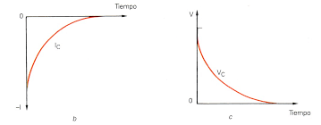En este se aprecia que la corriente aumenta de valor negativo hasta 0. Esto es debido a que en la descarga, la corriente fluye en sentido contrario a la que fluía con la fuente.
En el siguiente video puede apreciarse el proceso de carga y descarga con sus respectivos gráficos:
Si se conecta una carga en el circuito, la corriente máxima (I total) va a ser menor por la presencia de resistencia. Al ser menor la intensidad, el tiempo de carga y descarga también aumentará.
3. Tiempo de carga y descarga
Se sabe que un condensador tarda en cargar un 63.2% el tiempo dado por el producto entre la resistencia en el circuito y la capacitancia del capacitor. Es decir:
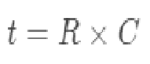Donde:
- t es el tiempo en segundos (s).
- R es la resistencia en ohms (Ω).
- C es la capacidad del condensador en faradios (f). Esta unidad se verá más adelante.
Este valor conforma una constante de tiempo para la carga y descarga del capacitor. Se considera que este está completamente cargado o descargado cuando pasan el total de 5 constantes de tiempo. Es decir, el tiempo de carga y/o descarga es igual a:
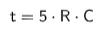
4. Tensión máxima y de trabajo
Si la tensión almacenada en el capacitor es muy alta, puede que la resistencia del dieléctrico no sea suficiente para contenerlo, por lo que este es penetrado por la corriente generada, llegando a causar un corto o una explosión dependiendo del tipo de condensador. Demostración de sobrecarga de capacitor:
Es por esto que tienen una tensión máxima a la que pueden ser sometidos sin dañarse, la llamada tensión de trabajo. Esta viene impresa en el encapsulado del capacitor.
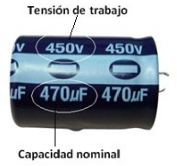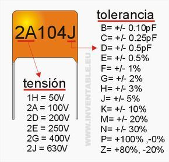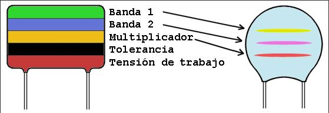
5. En corriente alterna
En corriente alterna, el capacitor se carga y descarga por cada ciclo de frecuencia de la tensión, debido a la oscilación de tensión posiiva y negativa en el circuito. En el primer semiciclo positivo, el condensador se carga con la tensión de la fuente; una vez cargado la intensidad queda en 0. En el punto de 0V al terminar el semiciclo este se descarga para luego volverse a cargar con la polaridad opuesta en el siguiente semiciclo negativo. Esta secuencia se repite por cada ciclo de frecuencia. Cabe aclarar que para corriente alterna debe usarse un capacitor sin polaridad.
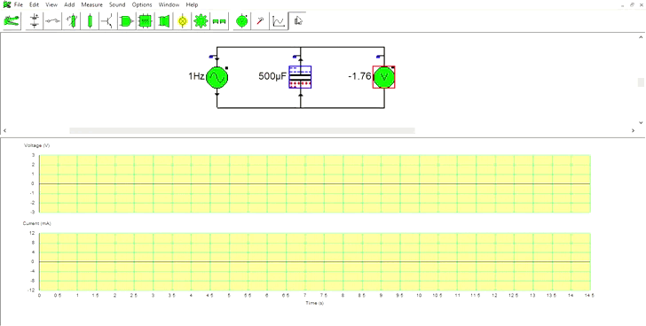
Demostración con fuente alterna de 1Hz
6. Cargas y Capacitancia
La principal propiedad de los capacitores es su capacidad de almacenar energía eléctrica. Esta es la llamada "capacitancia" o capacidad.
La cantidad de carga que pueda almacenar estará dada por el producto entre la capacitancia y la tensión aplicada (porque al aumentar la tensión aumenta la cantidad de cargas y su energía) quedandonos la siguiente expresión:
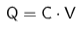
Donde:
- Q es la cantidad de cargas medida en Culombios o Coulombs (C).
- C es la capacidad del capacitor medida en Faradios (f).
- V es la tensión aplicada medida en Voltios (V).
Se dice que la capacidad de un condensador es igual a un faradio cuando almacena una carga de un Coulomb (Q) al aplicarse Un Voltio (V) de tensión. Al tratarse de una magnitud grade, se suele trabajar con submúltiplos como mili (m), micro (µ), nano (n) y pico (p).
La capacidad de un condensador está dada por las siguientes características constructivas: espesor del material dieléctrico, la calidad de este (dada por su constante dieléctrica) y la superficie de las armaduras. Mientras mayor superficie de las placas, menor separación entre estas dada por el espesor del dieléctrico y mejor calidad de este, se podrá almacenar mayor cantidad de cargas eléctricas a mayor voltaje. La relación entre estas características se manifiesta en la siguiente expresión matemática:
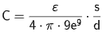
Donde:
- ε es la constante dieléctrica del material aislante.
- s es la superficie de las armaduras en metros cuadrados (m2).
- d es el espesor del dieléctrico en metros (m).
En la siguiente tabla se encuentran los valores de constante dieléctrica de distintos materiales:
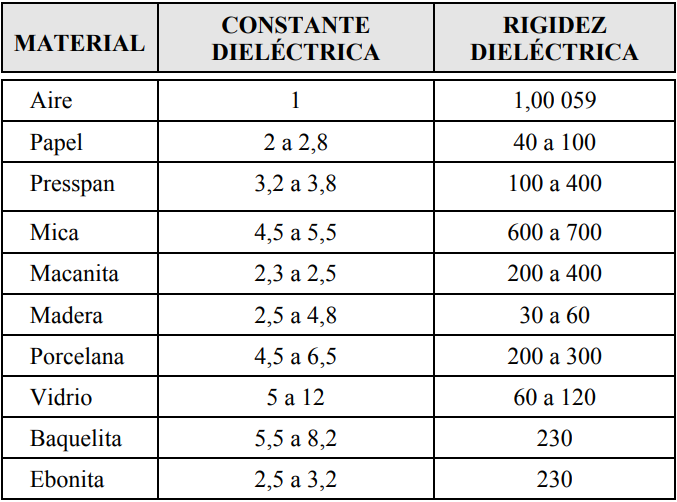
7. Asociación de capacitores
De la misma forma que las resistencias, los condensadores conectados en serie y/o en paralelo en un circuito pueden asociarse o simplificarse a un solo condensador.
7.a En serie
Al igual que las resistencias, se dice que están acoplados en serie cuando al terminal de salida de uno, se le une el de entrada de otro, y que por lo tanto les pasa la misma corriente. En consecuencia la carga de los condensadores en serie será la misma, sin embargo, al igual que en la resistencias, la tensión aplicada se repartirá entre todas en función a su capacitancia, cumpliendo también con la ley de tensiones de Kirchhoff.
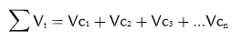
Expresión matemática de la ley de tensiones de Kirchhoff
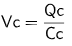
Fórmula de tensión despejada de la formula de carga
Para calcular la capacidad total o equivalente de los condensadores en serie se usa la misma fórmula usada para calcular la resistencia equivalente en paralelo:
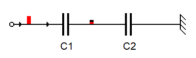
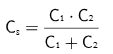
Fórmula para serie de 2 capacitores
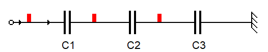
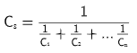
Fórmula para serie de 3 o más capacitores
De la misma forma que en las resistencias en paralelo, el valor será menor que el menor capacitor en serie.
7.b En paralelo
Al igual que las resistencias, se dice que están acoplados en paralelo cuando las terminales de todos los condensadores están conectados en paralelo, formado nodos que dividen el conductor en distintas mallas y por tanto la corriente que por este pasa. A diferencia que en las resistencias, la corriente que pase será igual en todas las mallas, a no ser que alguna lleve alguna carga resistiva. En caso contrario la corriente será igual a la total dividido la cantidad de mallas, cumpliendo con la ley de mallas de Kirchhoff.
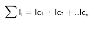
Expresión matemática de la ley de mallas de Kirchhoff
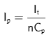
Fórmula de corrientes por malla
Al igual que en los paralelos de resistencias, la tensión en cada malla es igual. Sin embargo, a diferencia de las series, la carga por cada capacitor es distinta y variará en función de su capacitancia, calculándose con la fórmula dada anteriormente.
Para calcular la capacidad total o equivalente de los condensadores en paralelo se usa la misma fórmula usada para calcular la resistencia equivalente en serie:
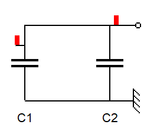
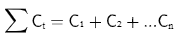
Fórmula usada para paralelos
Tipos de condensadores
Existen diversos tipos de capacitores los cuales varían principalmente en su capacidad, uso, material, tamaño, polaridad, método de construcción, etc. Dentro de su clasificación existen dos principales grupos: fijos y ajustables. Los más usados son los fijos, que mantienen una capacitancia constante. Estos se clasifican en función al material dieléctrico que utilizan. Los más usados son los siguientes:
-
Plásticos
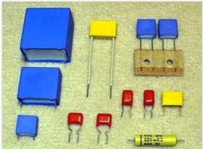Estos usan poliestireno y/o estiroflex. Consiguen capacidades relativamente elevadas a altas tensiones de hasta 1kV y capacitancia desde los nano Faradios hasta los mili Faradios. Esto gracias a su gran resistencia de aislamiento. Pueden trabajar a altas temperaturas.
-
Cerámicos
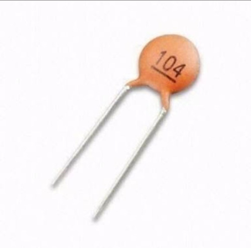Utilizan como dieléctrico diversos compuestos cerámicos de alta constante dieléctrica, proporcionando una gran capacidad en un reducido tamaño, sin embargo no soportan altas tensiones ni temperaturas. Su valor capacitivo van de los pico Faradios a los 100 nano Faradios aproximadamente.
-
Electrolíticos
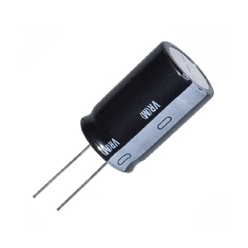
Estos capacitores se diferencian de los demás por su composición constructiva. Estos están formados for láminas enrrolladas de aluminio cubiertas de óxidoy papel empapado de un líquido electrolítico (es decir que tiene electrones libre) o también laminas de aluminio y plomo cubiertas de óxido sumergidas en una solución de cloruro de amonio (electrolito).
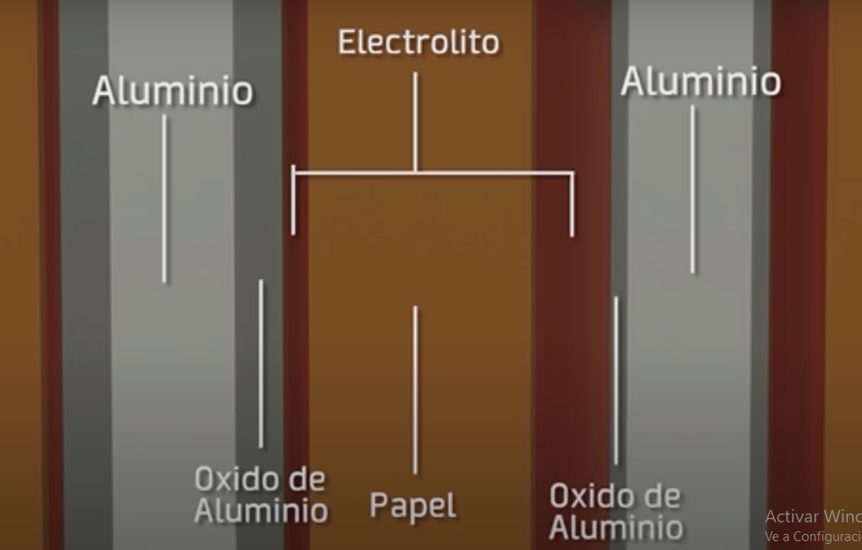
Disposición de las placas. (Créditos a VirtualBrain)
En estos condensadores, el papel y/o la sustancia electrolítica no funcionan como el aislante diélectrico, sino como un conductor. El verdadero dieléctrico son las capas de óxido entre las láminas metálicas de este. Poseen una alta capacitancia que puede llegar a los cientos de mili Faradios y son capaces de trabajar a voltajes medios, teniendo un tamaño relativamente pequeño.
Debido a la disposición asimétrica de sus placas, estos tiene polaridad. Si su polaridad es incumplida, se produce un cortocircuito que produce calor y evapora el electrolito, causando el aumento de presión interna y su posterior liberación en forma de explosión por presión. Por este motivo, en la parte superior de su encapsulado poseen una ranura metálica a través de la cuál los gases pueden escapar si se produciera una explosión, reduciendo el riesgo humano.
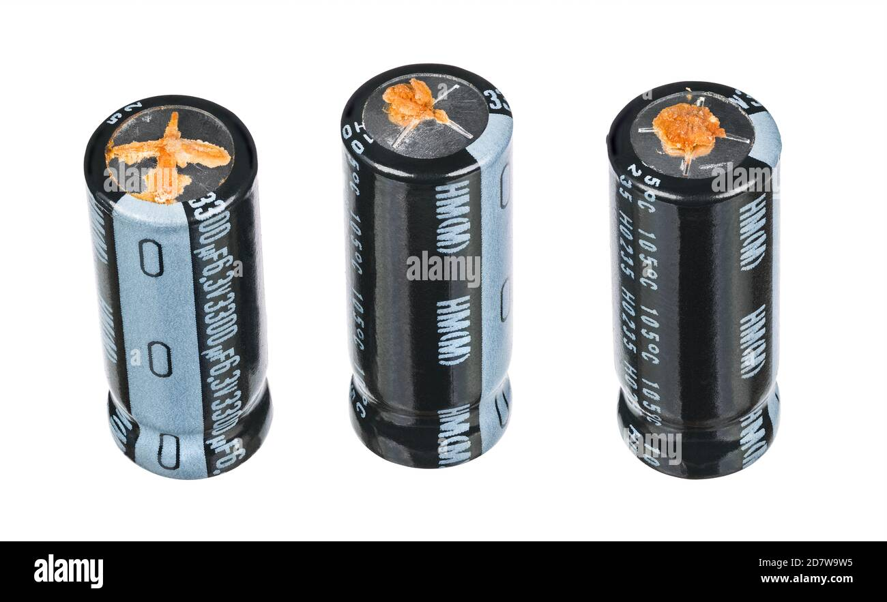
Ranura abierta por el escape de gases internos.
Además de estos hay muchos más tipos como los capacitores de papel, micra, tantalio, etc. todos estos solo varían sólo en su dieléctrico, características capacitivas, tamaño y uso, por lo que no serán cubiertas. Luego tenemos los variables o ajustables, cuya diferencia es su capacidad capaz de ser variada manualmente según las necesidades. Tampoco serán cubiertas.
Usos en electrónica y electricidad
Gracias a sus características, tiene muchas y diversas aplicaciones tanto en electricidad como electrónica, en circuitos análogos y digitales. Algunos ejemplos son:
-
Desacoplamiento (Bypass) o filtrado de ruido
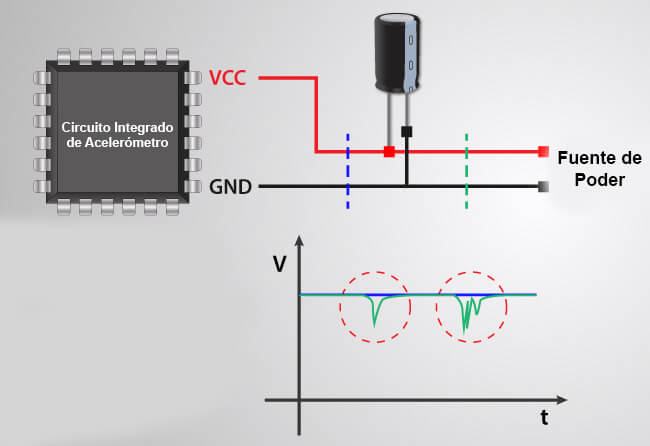
Suele usarse en circuitos, especialmente con circuitos integrados, conectados a ambos polos de la fuente para el filtrado de ruido, es decir, para suplir de tensión cuando se produce alguna caída de algún tipo, fluctuación o conmutación en la fuente.
-
Conversión CA a CD
El condensador suaviza la bajada de tensión de los semiciclos positivos en la salida del puente rectificador, mejorando el resultado de la salida.
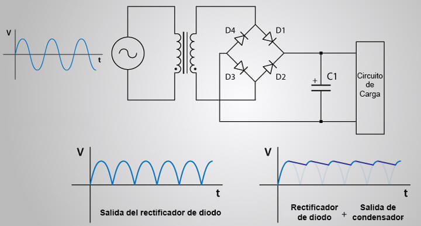
-
Filtrado de señales
Por causa del tiempo de respuesta del condensador, pueden bloquear las señales de baja frecuencia mientras que permiten el paso de altas frecuencias. Se utiliza en receptores de radio para sintonizar frecuencias no deseadas y en circuitos de cruce dentro de los altavoces, para separar las frecuencias bajas para el woofer y las frecuencias altas para el tweeter.
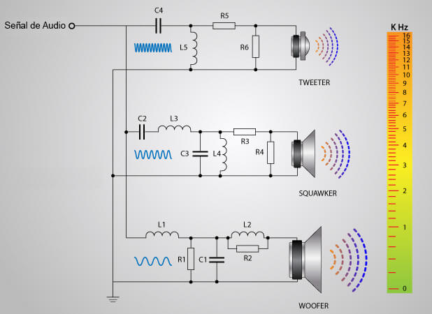
-
Sensores
Pueden usarse como sensores implementando los capacitores y modificandolos para que varien según lo que se valla a medir. La capacitancia resultante correspondera a cierta unidad de la medición.
-
Baterías
Aprovechando su capacidad de almacenar energía y descargarla rápidamente.
-
Memorias
Con condensadores de pequeña capacidad se los conecta junto a transistores los cuales actúan como puertas. Si existe carga, se leera como un valor de 1; en caso contrario se lee como un 0. De esta forma se puede trabajar con sistema binario y puertas lógicas en los circuitos digitales informáticos.
-
Osciladores
-
Flash de cámaras fotográficas
-
Tubos fluorescentes
-
Compensación de los factores de potencia
-
Arranque de motores monoásicos
-
Etc
Aplicación en un circuito temporizador
En el siguiente video se muestra el funcionamiento de un circuito temporizador simple con relé:
En el video se aprecia un circuito principal con LED controlado por un segundo circuito controlador mediante el uso de un relé. Un relé es un disposivo eléctrico mecánico que funciona como un interruptor controlado por un circuito aislado. Los relés están formados por dos principales componentes: un electroimán que va conectado en el circuito controlador y un interruptor mecánico que va conectado en el circuito principal.
El temporizador sería el circuito controlador del lado izquierdo. En este se encuentra una fuente de 12V , un pulsador normalmente abierto y un capacitor de 20mF en paralelo a una resistencia de 72Ω conectada en serie con el electroimán del relé.
Al cerrar el circuito con el pulsador, se genera una corriente máxima que cargará el capacitor e cuestión de mili segundos, debido a que en la malla del capacitor la resistencia tiende a 0. Una vez cargado el capacitor su malla queda abierta, por lo que se generará una nueva corriente que pasará por la resistencia y el relé. El electroimán tiene una resistencia de 100Ω y empieza a funcionar con una potencia máxima de 1W; si se lo conecta en serie a la fuente su potencia sería mayor a máxima, por lo que se añade una resistencia de 72Ω que disipa la potencia restante protegiendo al relé. Al activarse este acciona el interruptor, cerrando el circuito principal. Sin embargo el pulsador es accionado por un menos de un segundo, causando que el circuito controlador se abra. Es en este momento cuando actúa el capacitor el cuál comienza a descargarse proveyendo de la tensión y corriente necesaria para mantener el relé activo por cierto tiempo, especificamente, 5,5 segundos. Una vez descargado, el electroimán deja de funcionar, volviendo a accionar el interruptor y abriendo el circuito principal.
La única razón por la que se usa un relé es para que el circuito principal se abra y cierre instantáneamente y por lo tanto, el LED se encienda y apague instantáneamente. Esto debido a que si directamente se conectara el LED en paralelo con un capacitor, lo que pasaría es que la caída de tensión disminuiría con el tiempo, y por lo tanto, el LED se iría apagando poco a poco en lugar de apagarse instantáneamente.
En el siguiente video se muestra el funcionamiento de un circuito temporizador simple con relé:
En el video se aprecia un circuito principal con LED controlado por un segundo circuito controlador mediante el uso de un relé. Un relé es un disposivo eléctrico mecánico que funciona como un interruptor controlado por un circuito aislado. Los relés están formados por dos principales componentes: un electroimán que va conectado en el circuito controlador y un interruptor mecánico que va conectado en el circuito principal.
El temporizador sería el circuito controlador del lado izquierdo. En este se encuentra una fuente de 12V , un pulsador normalmente abierto y un capacitor de 20mF en paralelo a una resistencia de 72Ω conectada en serie con el electroimán del relé.
Al cerrar el circuito con el pulsador, se genera una corriente máxima que cargará el capacitor e cuestión de mili segundos, debido a que en la malla del capacitor la resistencia tiende a 0. Una vez cargado el capacitor su malla queda abierta, por lo que se generará una nueva corriente que pasará por la resistencia y el relé. El electroimán tiene una resistencia de 100Ω y empieza a funcionar con una potencia máxima de 1W; si se lo conecta en serie a la fuente su potencia sería mayor a máxima, por lo que se añade una resistencia de 72Ω que disipa la potencia restante protegiendo al relé. Al activarse este acciona el interruptor, cerrando el circuito principal. Sin embargo el pulsador es accionado por un menos de un segundo, causando que el circuito controlador se abra. Es en este momento cuando actúa el capacitor el cuál comienza a descargarse proveyendo de la tensión y corriente necesaria para mantener el relé activo por cierto tiempo, especificamente, 5,5 segundos. Una vez descargado, el electroimán deja de funcionar, volviendo a accionar el interruptor y abriendo el circuito principal.
La única razón por la que se usa un relé es para que el circuito principal se abra y cierre instantáneamente y por lo tanto, el LED se encienda y apague instantáneamente. Esto debido a que si directamente se conectara el LED en paralelo con un capacitor, lo que pasaría es que la caída de tensión disminuiría con el tiempo, y por lo tanto, el LED se iría apagando poco a poco en lugar de apagarse instantáneamente.
Fuentes y referencias
- Libro "Electrotecnia" por Pablo Alcalde San Miguel
- Fundación "San Valero" apuntes tema 4 : http://profesores.sanvalero.net/~w0320/TEMA%204.pdf
- Refrigeración Escobar : https://refrigeracionescobar.com.ar/el-capacitor-definicion-tipos-uso-circuitos-y-funcionamiento/
- Digikey Electronics : https://www.digikey.com/es/articles/fundamentals-understand-the-characteristics-of-capacitor-types
- TechLapse : COMPORTAMIENTO DEL CONDENSADOR EN CORRIENTE ALTERNA : https://www.youtube.com/watch?v=qvntOxWbZZQ
- Mentalidad de ingeniería : Capacitores Explicados - Los fundamentos funcionan los condensadores. Principio de funcionamiento : https://www.youtube.com/watch?v=h_m6qFRNITU
- Virtual Brain : Como Funciona un Capacitor o Condensador ⚡ Que es un Capacitor (Varios tipos!) : https://www.youtube.com/watch?v=oS4WQRXfm-M
- Electrónica Online: https://electronicaonline.net/componentes-electronicos/condensador/